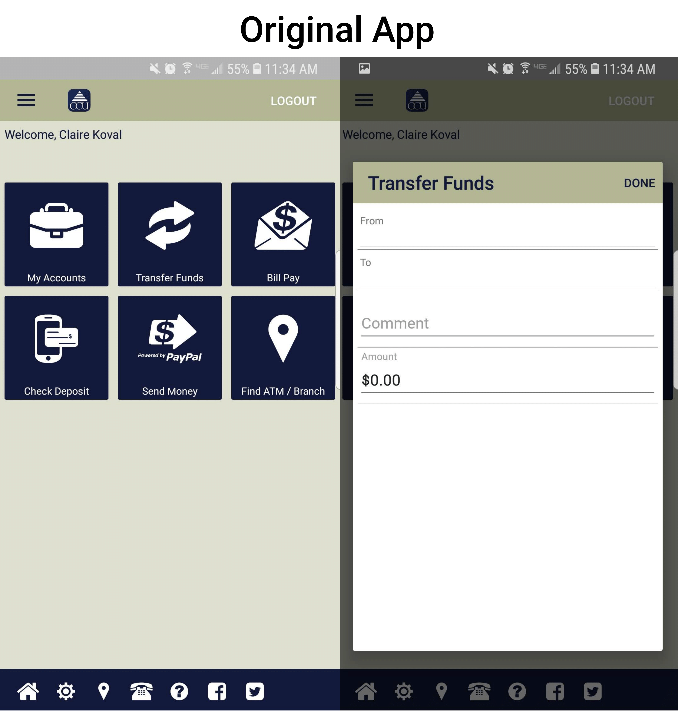
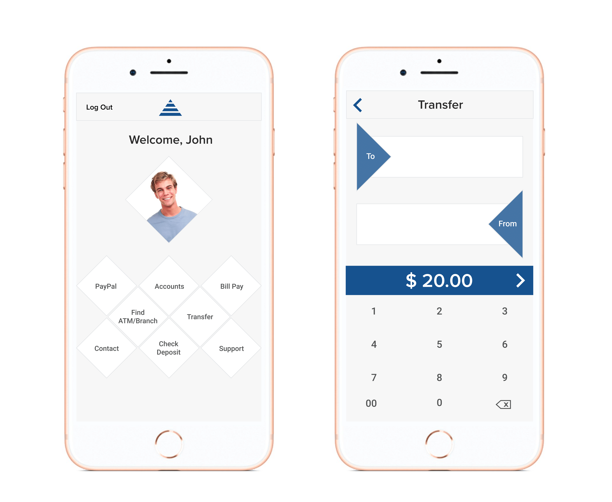

This is a simple redesign of two pages of the Corning Credit Union banking app. I was created in Adobe Illustrator in the fall of 2018 for the course New Media Design Elements. The main goal was to streamline the interaction without changing the functionality of the app itself. The current version of the app can be easily contrasted with the redesign.
 